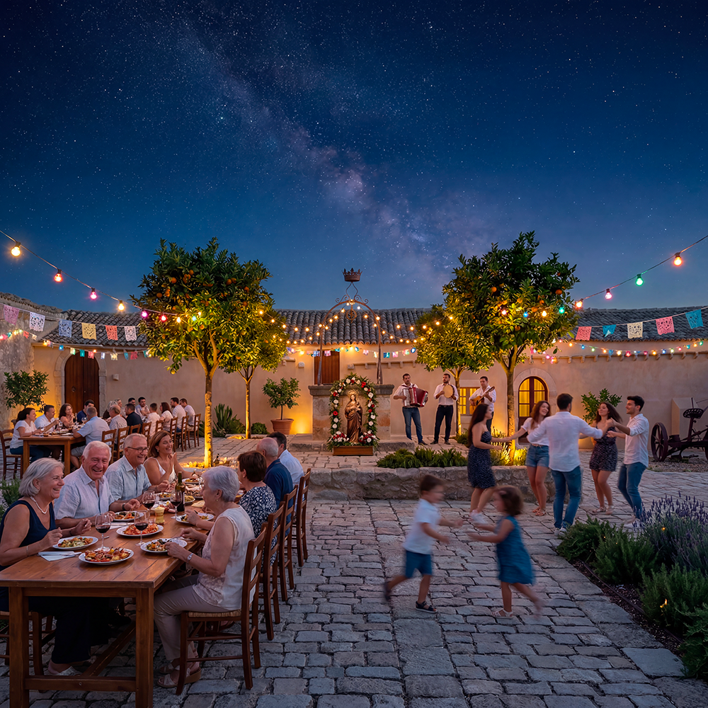

Negli ultimi anni in Sicilia e in altre parti d’Italia sono nati numerosi progetti di rigenerazione di borghi. Molti di questi si sono concentrati su formule come le “case a 1 euro” o su modelli fortemente orientati al turismo. Queste esperienze hanno spesso prodotto risultati limitati nel tempo: abitazioni occupate solo stagionalmente, scarsa creazione di comunità residenti stabili e una forte dipendenza da flussi turistici variabili o da incentivi pubblici temporanei.
Baglio San Michele nasce con un’intenzione differente. Non punta a diventare una destinazione turistica, ma un luogo in cui le persone possano abitare stabilmente, crescere i propri figli e costruire relazioni durature. La comunità non è un effetto collaterale del progetto, ma il suo obiettivo principale.
A differenza di modelli basati prevalentemente sull’attrazione di residenti temporanei o sull’ospitalità turistica, qui si lavora per creare le condizioni di una vita concreta: la trasmissione dei mestieri alle nuove generazioni, la mutua assistenza tra le famiglie, la cura della terra secondo principi di permacultura e lo sviluppo di una maggiore autonomia energetica. La dimensione spirituale e i valori cristiani non sono elementi decorativi, ma parte viva del tessuto comunitario.
Questo approccio risponde a una domanda crescente di soluzioni abitative stabili e significative, in un momento in cui molte persone cercano alternative sia all’isolamento delle grandi città che alla precarietà di modelli basati solo sul turismo o sugli incentivi temporanei.
